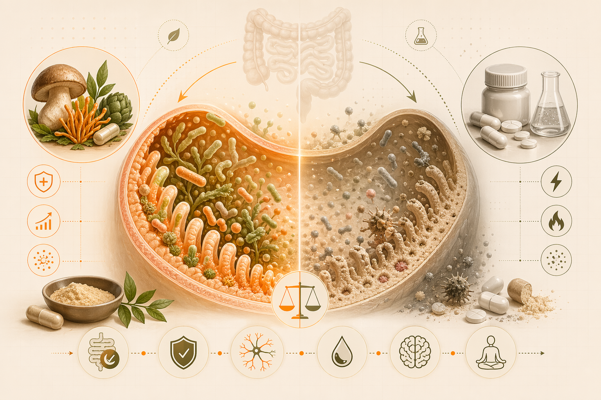

Синтетический витамин попадает в кишечник и организм видит: это не еда, это химия. Защитные механизмы срабатывают. Плохие бактерии растут, хорошие умирают. Ты пил витамин для здоровья, а разрушил микробиом.
Натуральный летипорус культуральная жидкость это пребиотик. Полезные бактерии едят эти полисахариды, растут, размножаются. Твой иммунитет укрепляется, пищеварение улучшается, энергия растёт. Это не просто БАД, это система восстановления.
Разбираем микробиом с точки зрения бактерий, как синтетика разрушает, как натуральные БАД восстанавливают, и почему это важнее, чем сами витамины.
Ключевая идея: натуральные формы БАД работают как питание для полезной флоры, а не как агрессивный триггер. Поэтому эффект мягче, но глубже и устойчивее.
У тебя в кишечнике живёт 3-4 триллиона бактерий. Они это не паразиты — это твои союзники. Они синтезируют витамины (K, B12, биотин), производят короткоцепочечные жирные кислоты (работают как топливо), защищают от патогенов.
Ключевые полезные штаммы:
Почему это важно: согласно исследованиям (Nature Microbiology, 2021), разнообразие микробиома на 40% определяет твой иммунитет, метаболизм и даже настроение (микробиом-мозг-ось). Люди с разнообразным микробиомом реже болеют, лучше худеют, более устойчивы к стрессу.
| Синтетический вид | Как влияет на микробиом | Результат |
|---|---|---|
| Синтетический витамин C (аскорбиновая кислота) | Кислая, не даёт бактериям энергию, раздражает слизистую | Akkermansia падает на 30-40%, воспаление растёт |
| Магний оксид | Слабительное, вымывает воду из кишечника, убивает адгезивные бактерии | Диарея, исчезают полезные бактерии, дефицит магния ещё хуже |
| Цинк оксид | Токсичен для бактерий, вызывает дисбиоз | Плохие бактерии (E. coli) растут, хорошие (Faecalibacterium) падают |
| Поливитамины с консервантами | Консерванты (бензоат натрия и т.д.) убивают бактерии целом | Разнообразие микробиома падает на 50%, иммунитет теряет силу |
Пребиотик это не пробиотик. Пробиотик это живые бактерии (йогурт, кефир). Пребиотик это пища для бактерий, которые уже живут в твоём кишечнике. Мол: твой организм.
Летипорус культуральная жидкость содержит: полисахариды (бета-глюканы) которые организм человека не может переварить, но полезные бактерии едят с удовольствием. Это чистая энергия для микробиома.
Процесс:
| Параметр | Синтетические витамины | Натуральные БАД (MYKORA) |
|---|---|---|
| Источник энергии для бактерий | Нет (бактерии не едят синтетику) | Да (полисахариды питают хорошие бактерии) |
| Воспаление в кишечнике | Растёт (синтетика раздражает слизистую) | Падает (натуральные вещества успокаивают слизистую) |
| Разнообразие микробиома | Падает (неселективная убивает и хорошие, и плохие) | Растёт (пребиотик кормит только полезные штаммы) |
| Akkermansia уровень | Падает на 30-40% (риск здоровья растёт) | Растёт на 50-100% (здоровье кишечника восстанавливается) |
| Побочные эффекты | Запор, диарея, газ, вздутие, дискомфорт | Нет (натуральное хорошо переносится) |
| Первый результат | 3-4 недели (если результат вообще будет) | 3-5 дней (ощущаешь лучше переваривается еда, меньше газа) |
Ожидать: мягкое вздутие (это нормально, бактерии едят и производят газ), улучшение пищеварения к концу недели
Ожидать: исчезновение газа, улучшение энергии, нормализация стула, лучше спишь
Результат: микробиом полностью восстановлен, иммунитет сильный, пищеварение идеальное
Синтетические витамины это попытка помочь кишечнику напрямую. Натуральные БАД это работа через микробиом — кормишь полезные бактерии, они кормят тебя. Это разные философии.
Люди на максималках, которые беспокоятся о здоровье, выбирают летипорус. Потому что он восстанавливает микробиом, микробиом усиливает иммунитет, иммунитет даёт тебе 10% больше мощности в жизни.
Летипорус культуральная жидкость + Omega-3 + D3 + Магний цитрат + Цинк пиколинат. Система, которая работает через твои бактерии, не против них.
Начать восстановление